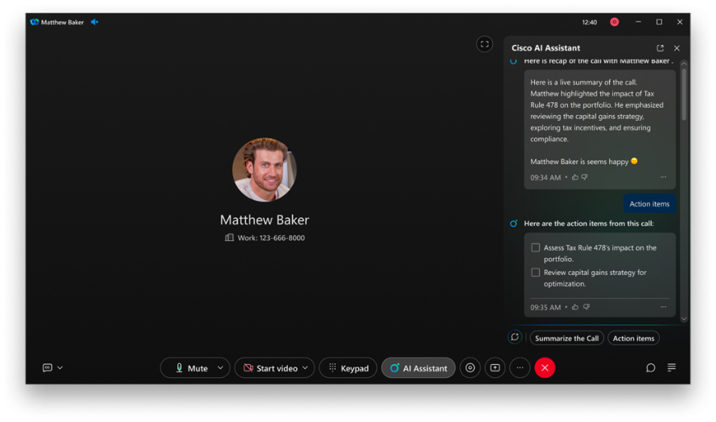
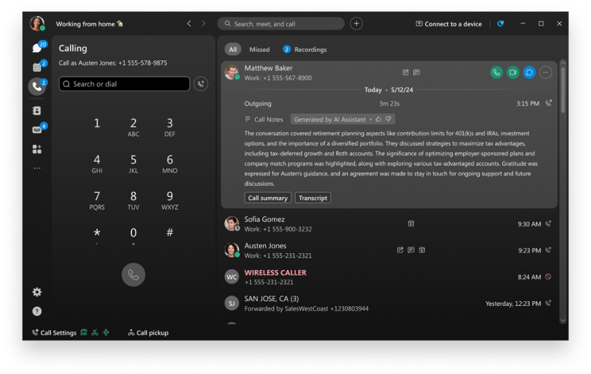
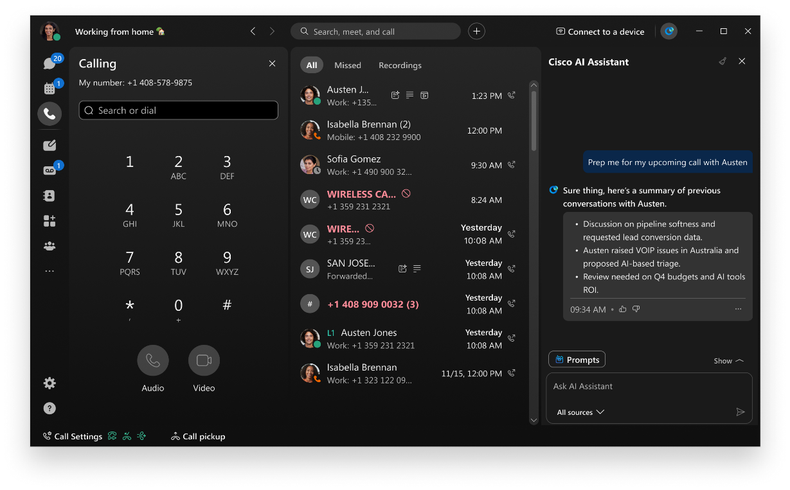
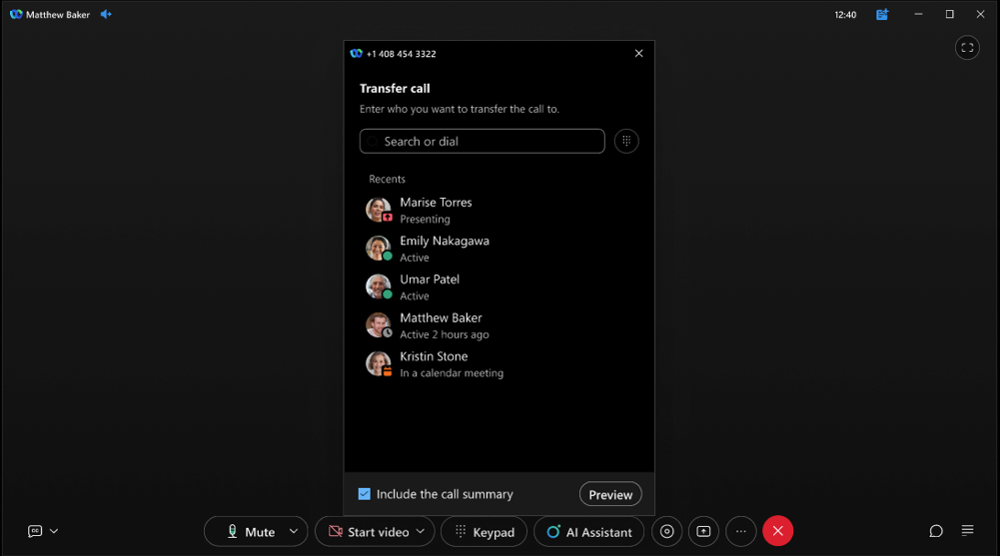
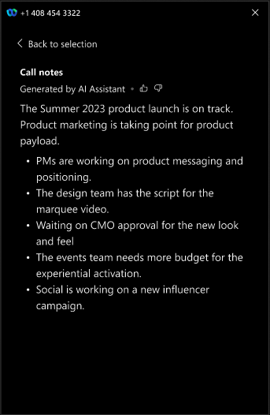
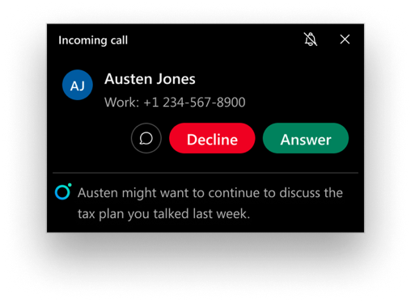
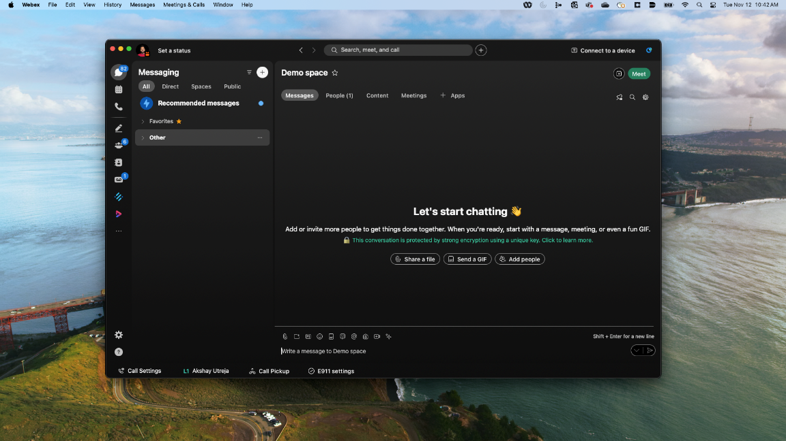
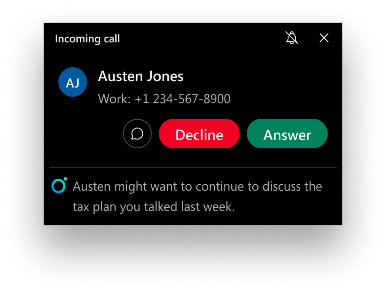

Siemer Milling Company. Family and employee-owned flour milling since 1882.
Discovery is done. Here's what comes next: getting ready for the cloud, then bringing AI into your calls.
A simple path from on-prem phones to Webex Calling. You set the pace, and we keep disruption low.
Use Cloud Connected UC to see who you have and who's ready to move. You'll know who can go now and who needs a little more prep.
Roll out the Webex app on desktop and mobile, or add calling to the tools your teams already use every day.
Turn on Webex Calling and map out the migration: waves, number porting, and devices across all three mill sites.
Move the easy wins first using built-in migration tools: bulk provisioning, number porting, and automated device onboarding.
No big-bang cutover. Move everyone else when the business is ready, including users and setups that need more time.
Three phases to get from prep work to cutover, with the tools to support each stage.
REST APIs to provision Webex Calling, with ongoing updates from Cisco.
Bulk provisioning and task-based tools in Control Hub for day-to-day migration work.
Once you're on Webex Calling, the platform keeps paying off: mobility, simpler operations, modern devices, and more.
Summaries, call prep, and knowing who's calling and why before you pick up.
Grouped by license so you can see what's included and what's an add-on.
Comes with Calling Professional. No extra license needed.
Less note-taking, more time with the customer


Call prep, shared summaries on transfer, and caller intent. Some of this is live today; more lands in Q4FY26.
Show up to the next call already caught up

Hand off a call without making the customer repeat themselves



Know why they're calling before you answer

